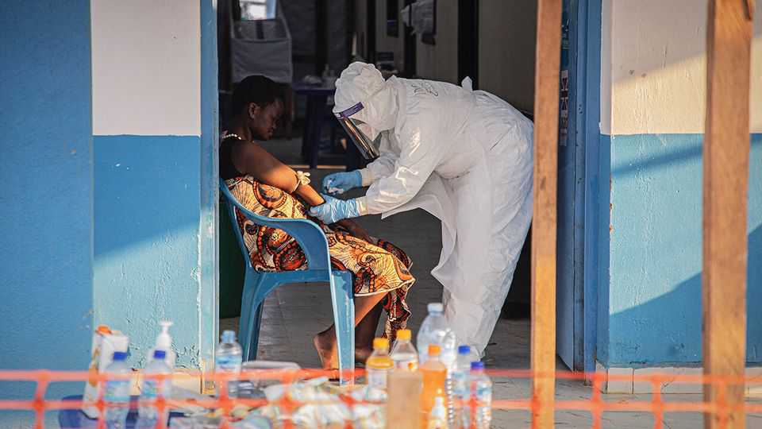
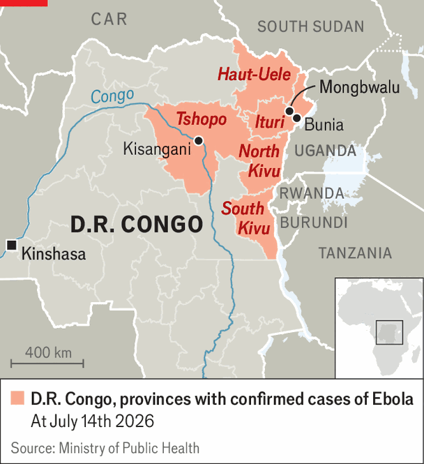
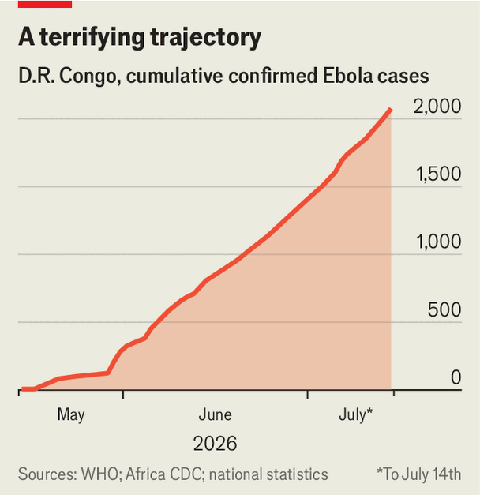

The Ebola epidemic is getting out of control
It has spread to five provinces in Congo and may soon reach South Sudan
July 16th 2026

“WE KEEP ASKING and we still haven’t got anything,” says Moise Bulabantu from a dingy, clapboard clinic on the outskirts of Bunia, a city in eastern Democratic Republic of Congo. The 38-year-old community nurse is the only public-health worker in his district of more than 40,000 people, where an outbreak of Ebola has been spreading. Every day he sees patients who are feverish or vomiting. But the government has yet to send protective equipment. “We’re pushing for the minimum,” says Mr Bulabantu, with bags under his eyes. “We only have gloves.”
Stories such as Mr Bulabantu’s are common across Ituri, the main province affected by the Ebola epidemic. When the Congolese government declared an outbreak on May 15th, the disease had been spreading for at least six weeks, prompting the World Health Organisation (WHO) to declare it a public-health emergency two days later. Health authorities are still failing to contain the epidemic.

By July 14th Congo had confirmed 2,073 infections, about 90% of them in Ituri, and 796 deaths. On July 9th the government admitted that the disease had spread to two new provinces. There is a high risk it could soon enter neighbouring South Sudan. Unless the response improves dramatically, the current outbreak may become as bad as the one that killed more than 11,000 people in west Africa a decade ago, according to calculations in June by the American Centres for Disease Control and Prevention.
One problem is gauging the real size of the epidemic. The reported number of cases is an underestimate, says Peter Piot, a professor of global health at the London School of Hygiene and Tropical Medicine who co-discovered the Ebola virus in 1976. He says only 30% of new cases are contacts of known patients, which suggests people are continuing to fall ill, spread the virus and die far from view. The lack of reliable case numbers also makes it impossible to know how many of those who get the virus end up dying. Part of the steep rise in reported cases (see chart) is driven by rising availability of tests, but much is due to the real spread of the virus. Dr Piot says the outbreak is progressing faster than any he has seen in Congo (this one is the 17th).

As there is no vaccine yet against the Bundibugyo strain causing this outbreak (though one trial is beginning in Oxford), measures such as testing, contact-tracing and isolation are crucial to containing it. But too little of this is happening in Ituri. One challenge is logistical. Ituri is a province of dense forests and poorly connected hamlets. Dozens of armed groups threaten civilians. Some 900,000 people live in displacement camps after fleeing conflict in the province. Others are moving around and looking for work in unlicensed gold mines, making them hard to trace and reluctant to isolate themselves. Aid workers and soldiers at checkpoints talk of waves of people fleeing virus hotspots.
A response is visible in Bunia, the provincial capital, which has hospitals, roads and an airport. But even there it is too small, says Trish Newport of Médecins Sans Frontières, a medical charity. Protective equipment is scarce. The situation is far worse the farther you move from the city, where state authority is often notional. The road to the gold-mining town of Mongbwalu, one hotspot, is unpaved and studded with militia and army checkpoints, yet aid workers still consider the town relatively accessible. Other areas affected by Ebola are far more remote.
Without the correct equipment, hospitals and clinics can become vectors for transmission, deterring would-be patients. Many clinics have been forced to close in order to disinfect and some have not reopened. Health workers such as Mr Bulabantu are at high risk of catching the virus themselves. Across eastern Congo dozens of front-line health workers have fallen ill and 25 have died of the disease, says the WHO. “We’re very scared,” says Mr Bulabantu. He is also barely paid. His meagre monthly salary of about $80 has not been handed out for months; he is surviving on an Ebola-related bonus of $70.
In theory, there is enough money to fund the response. The WHO and the African Centres for Disease Control say that donors have pledged over $1.2bn, more than double the $518m they reckon is needed. But only $115m has been paid out. Over the past week, health workers in Bunia and the surrounding area have gone on strike over pay and working conditions.
Even if the rest of the money arrives quickly, it will be hard to convince people that their main concern is Ebola, rather than the lack of fresh water or untreated malaria that is killing their children, says Ms Newport. In places such as Bunia, where the virus is visible and people are dying on the street, help is more welcome.
The virus has long spread beyond Ituri. In late June a pregnant woman who died in Ituri was transported to Kisangani, a city of 1.5m people and the capital of neighbouring Tshopo province. She received a traditional burial and has since been confirmed to have died of Ebola. “It’s a question of days before we have local spread,” says an aid official, explaining that dead bodies are particularly contagious.
There are also concerns about the virus spreading north into South Sudan, which is on the edge of civil war and has an even more fragile health system than Congo. A paper in the Lancet Infectious Diseases, predating the spread of the disease to the border province of Haut-Uele, used modelling to estimate a seven-in-ten chance that a case of Ebola would arrive in South Sudan in the next three months.
Mr Bulabantu says people who come to his clinic are afraid of dying. “There isn’t really a way for us to protect ourselves,” he says. “Neither for us, nor the ill.” Fear seems like a rational response.■
Sign up to the Analysing Africa, a weekly newsletter that keeps you in the loop about the world’s youngest—and least understood—continent.